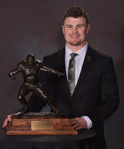
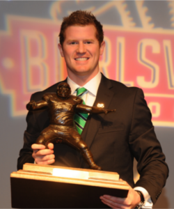

The "Brandon Burlsworth Memorial" refers to a collection of tributes honoring the former University of Arkansas walk-on football player, most notably the Burlsworth Trophy for college football's most outstanding walk-on player.


Other memorials include the Brandon Burlsworth Foundation, which supports underprivileged children, a mural in his hometown of Harrison, Arkansas, his retired #77 jersey at the University of Arkansas, and his locker displayed in the team's facilities.
The Movie "Greater" is a biographical sports film about Burlsworth's life and legacy was released in 2016.
Burlsworth Memorial Scholarship: The University of Arkansas also offers a scholarship fund named in his honor.